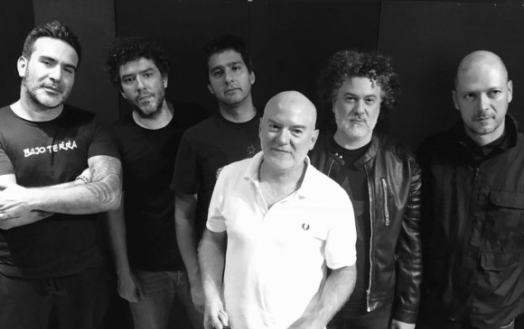

HISTORIA DE LA BANDA
El grupo fue fundado por Jaime Andrés Pulgarín, Lucas Guingue y Nicolás Naranjo en 1989, proponiendo un sonido influido por el punk y el new wave, tendencias determinantes en la formación del movimiento roquero de Medellín en los años 90. El nombre "Bajo Tierra" se eligió por la procedencia subterránea del grupo, al margen de los medios masivos. Con este espíritu grabaron en 1990 un EP grabado en el estudio MidiMix por el exintegrante de Nash, Víctor García.Para 1994, con el auge del movimiento roquero en Medellín, el grupo firmó un contrato con el sello Codiscos y grabó una larga duración del cual se escuchó en todo el país el tema "Ojos enfermos" y en algunas ciudades "Piedras de cielo" y "Champeta". Dos años después grabaron Lavandería Real, álbum producido por Federico López, del cual se conocieron las canciones "Las puertas del amor" y "El pobre", probablemente el tema más recordado de Bajo Tierra.Luego de un receso en 2000, el grupo se reunió en 2004 y presentaron tres años después un nuevo álbum. La propuesta de este nuevo trabajo fue retornar a la identidad de la banda en sus primeros años, de ahí surgió el nombre de Los días adelante.
